生成时间：2026-05-11 15:57:52
current_full: Current stack: enhanced MILP + preserve-greedy target builder + V3 phase greedy transition.placement_milp_original: Ablate placement: notebook original MILP without option pruning, elastic objective, warm-start hooks, or previous-state input.placement_greedy_two_phase: Ablate placement: notebook-style two-phase greedy placement, current target and transition.placement_simulated_annealing: Ablate placement: notebook-style simulated annealing over two-phase template choices.current_full: Current stack: enhanced MILP + preserve-greedy target builder + V3 phase greedy transition.target_no_preserve: Ablate target preservation: ignore previous layout when materializing target state.target_beam_preserve: Ablate target search: notebook preserve-first beam solver.target_exact_milp_templates: Ablate target rewrite/search: use exact MILP template list and first physical realization.current_full: Current stack: enhanced MILP + preserve-greedy target builder + V3 phase greedy transition.transition_serial_v0: Ablate transition: execute one root transition per iteration.transition_drain_v2: Ablate transition scoring: drain-aware non-conflicting groups without future Parallel-DAG.transition_full_plan_v2: Ablate transition granularity: execute the whole full plan each iteration.current_full: Current stack: enhanced MILP + preserve-greedy target builder + V3 phase greedy transition.placement_milp_original: Ablate placement: notebook original MILP without option pruning, elastic objective, warm-start hooks, or previous-state input.placement_greedy_two_phase: Ablate placement: notebook-style two-phase greedy placement, current target and transition.placement_simulated_annealing: Ablate placement: notebook-style simulated annealing over two-phase template choices.target_no_preserve: Ablate target preservation: ignore previous layout when materializing target state.target_beam_preserve: Ablate target search: notebook preserve-first beam solver.target_exact_milp_templates: Ablate target rewrite/search: use exact MILP template list and first physical realization.transition_serial_v0: Ablate transition: execute one root transition per iteration.transition_drain_v2: Ablate transition scoring: drain-aware non-conflicting groups without future Parallel-DAG.transition_full_plan_v2: Ablate transition granularity: execute the whole full plan each iteration.| variant | completed_all | first_failed_stage | first_failure_phase | first_failure_reason | max_gpu_count | round2_stage0_bootstrap_balanced_gpu_count | round2_stage1_llm_spike_gpu_count | round2_stage2_vision_shift_gpu_count | round2_stage3_scale_down_gpu_count | round2_stage4_mixed_rebound_gpu_count | iterations | coarse_root_actions | fine_actions | configures | clears | placement_elapsed_sec | target_build_elapsed_sec | transition_sim_elapsed_sec | algorithm_wall_sec | estimated_hardware_sec |
|---|---|---|---|---|---|---|---|---|---|---|---|---|---|---|---|---|---|---|---|---|
| current_full | True | 12 | 4 | 12 | 7 | 4 | 9 | 25 | 75 | 206 | 21 | 21 | 0.3382 | 17.4033 | 0.0819 | 18.2559 | 2679.6000 | |||
| placement_milp_original | True | 12 | 4 | 12 | 7 | 4 | 9 | 26 | 74 | 224 | 23 | 23 | 1.3776 | 28.3313 | 0.0928 | 30.1041 | 2932.8000 | |||
| placement_greedy_two_phase | True | 18 | 4 | 18 | 12 | 4 | 15 | 18 | 87 | 240 | 32 | 26 | 92.4084 | 7.5632 | 0.0959 | 100.3524 | 3959.8000 | |||
| placement_simulated_annealing | True | 14 | 4 | 14 | 8 | 4 | 11 | 14 | 67 | 206 | 25 | 23 | 71.0355 | 0.7977 | 0.0489 | 72.1729 | 3137.2000 |
| variant | completed_all | algorithm_wall_sec | estimated_hardware_sec | fine_actions | iterations | first_failed_stage | first_failure_reason |
|---|---|---|---|---|---|---|---|
| current_full | True | 18.2559 | 2679.6000 | 206 | 25 | ||
| placement_milp_original | True | 30.1041 | 2932.8000 | 224 | 26 | ||
| placement_greedy_two_phase | True | 100.3524 | 3959.8000 | 240 | 18 | ||
| placement_simulated_annealing | True | 72.1729 | 3137.2000 | 206 | 14 |
| variant | completed_all | first_failed_stage | first_failure_phase | first_failure_reason | max_gpu_count | round2_stage0_bootstrap_balanced_gpu_count | round2_stage1_llm_spike_gpu_count | round2_stage2_vision_shift_gpu_count | round2_stage3_scale_down_gpu_count | round2_stage4_mixed_rebound_gpu_count | iterations | coarse_root_actions | fine_actions | configures | clears | placement_elapsed_sec | target_build_elapsed_sec | transition_sim_elapsed_sec | algorithm_wall_sec | estimated_hardware_sec |
|---|---|---|---|---|---|---|---|---|---|---|---|---|---|---|---|---|---|---|---|---|
| current_full | True | 12 | 4 | 12 | 7 | 4 | 9 | 25 | 75 | 206 | 21 | 21 | 0.3382 | 17.4033 | 0.0819 | 18.2559 | 2679.6000 | |||
| target_no_preserve | True | 12 | 4 | 12 | 7 | 4 | 9 | 15 | 77 | 304 | 32 | 32 | 0.2880 | 36.8097 | 0.0668 | 37.4702 | 4076.2000 | |||
| target_beam_preserve | True | 12 | 4 | 12 | 7 | 4 | 9 | 33 | 95 | 244 | 23 | 23 | 0.2803 | 684.6193 | 0.1028 | 685.3240 | 2950.8000 | |||
| target_exact_milp_templates | True | 12 | 4 | 12 | 7 | 4 | 9 | 11 | 74 | 306 | 33 | 33 | 0.2769 | 0.0069 | 0.0580 | 0.6514 | 4192.8000 |
| variant | completed_all | algorithm_wall_sec | estimated_hardware_sec | fine_actions | iterations | first_failed_stage | first_failure_reason |
|---|---|---|---|---|---|---|---|
| current_full | True | 18.2559 | 2679.6000 | 206 | 25 | ||
| target_no_preserve | True | 37.4702 | 4076.2000 | 304 | 15 | ||
| target_beam_preserve | True | 685.3240 | 2950.8000 | 244 | 33 | ||
| target_exact_milp_templates | True | 0.6514 | 4192.8000 | 306 | 11 |
| variant | completed_all | first_failed_stage | first_failure_phase | first_failure_reason | max_gpu_count | round2_stage0_bootstrap_balanced_gpu_count | round2_stage1_llm_spike_gpu_count | round2_stage2_vision_shift_gpu_count | round2_stage3_scale_down_gpu_count | round2_stage4_mixed_rebound_gpu_count | iterations | coarse_root_actions | fine_actions | configures | clears | placement_elapsed_sec | target_build_elapsed_sec | transition_sim_elapsed_sec | algorithm_wall_sec | estimated_hardware_sec |
|---|---|---|---|---|---|---|---|---|---|---|---|---|---|---|---|---|---|---|---|---|
| current_full | True | 12 | 4 | 12 | 7 | 4 | 9 | 25 | 75 | 206 | 21 | 21 | 0.3382 | 17.4033 | 0.0819 | 18.2559 | 2679.6000 | |||
| transition_serial_v0 | True | 12 | 4 | 12 | 7 | 4 | 9 | 75 | 75 | 206 | 21 | 21 | 0.2853 | 17.4689 | 0.2348 | 18.3116 | 2679.6000 | |||
| transition_drain_v2 | True | 12 | 4 | 12 | 7 | 4 | 9 | 26 | 71 | 213 | 22 | 22 | 0.2765 | 19.5059 | 0.0855 | 20.1804 | 2803.2000 | |||
| transition_full_plan_v2 | True | 12 | 4 | 12 | 7 | 4 | 9 | 12 | 65 | 205 | 23 | 22 | 0.2878 | 17.7016 | 0.0515 | 18.3526 | 2904.4000 |
| variant | completed_all | algorithm_wall_sec | estimated_hardware_sec | fine_actions | iterations | first_failed_stage | first_failure_reason |
|---|---|---|---|---|---|---|---|
| current_full | True | 18.2559 | 2679.6000 | 206 | 25 | ||
| transition_serial_v0 | True | 18.3116 | 2679.6000 | 206 | 75 | ||
| transition_drain_v2 | True | 20.1804 | 2803.2000 | 213 | 26 | ||
| transition_full_plan_v2 | True | 18.3526 | 2904.4000 | 205 | 12 |
| variant | completed_all | first_failed_stage | first_failure_phase | first_failure_reason | max_gpu_count | round2_stage0_bootstrap_balanced_gpu_count | round2_stage1_llm_spike_gpu_count | round2_stage2_vision_shift_gpu_count | round2_stage3_scale_down_gpu_count | round2_stage4_mixed_rebound_gpu_count | iterations | coarse_root_actions | fine_actions | configures | clears | placement_elapsed_sec | target_build_elapsed_sec | transition_sim_elapsed_sec | algorithm_wall_sec | estimated_hardware_sec |
|---|---|---|---|---|---|---|---|---|---|---|---|---|---|---|---|---|---|---|---|---|
| current_full | True | 12 | 4 | 12 | 7 | 4 | 9 | 25 | 75 | 206 | 21 | 21 | 0.3382 | 17.4033 | 0.0819 | 18.2559 | 2679.6000 | |||
| placement_greedy_two_phase | True | 18 | 4 | 18 | 12 | 4 | 15 | 18 | 87 | 240 | 32 | 26 | 92.4084 | 7.5632 | 0.0959 | 100.3524 | 3959.8000 | |||
| placement_milp_original | True | 12 | 4 | 12 | 7 | 4 | 9 | 26 | 74 | 224 | 23 | 23 | 1.3776 | 28.3313 | 0.0928 | 30.1041 | 2932.8000 | |||
| placement_simulated_annealing | True | 14 | 4 | 14 | 8 | 4 | 11 | 14 | 67 | 206 | 25 | 23 | 71.0355 | 0.7977 | 0.0489 | 72.1729 | 3137.2000 | |||
| target_beam_preserve | True | 12 | 4 | 12 | 7 | 4 | 9 | 33 | 95 | 244 | 23 | 23 | 0.2803 | 684.6193 | 0.1028 | 685.3240 | 2950.8000 | |||
| target_exact_milp_templates | True | 12 | 4 | 12 | 7 | 4 | 9 | 11 | 74 | 306 | 33 | 33 | 0.2769 | 0.0069 | 0.0580 | 0.6514 | 4192.8000 | |||
| target_no_preserve | True | 12 | 4 | 12 | 7 | 4 | 9 | 15 | 77 | 304 | 32 | 32 | 0.2880 | 36.8097 | 0.0668 | 37.4702 | 4076.2000 | |||
| transition_drain_v2 | True | 12 | 4 | 12 | 7 | 4 | 9 | 26 | 71 | 213 | 22 | 22 | 0.2765 | 19.5059 | 0.0855 | 20.1804 | 2803.2000 | |||
| transition_full_plan_v2 | True | 12 | 4 | 12 | 7 | 4 | 9 | 12 | 65 | 205 | 23 | 22 | 0.2878 | 17.7016 | 0.0515 | 18.3526 | 2904.4000 | |||
| transition_serial_v0 | True | 12 | 4 | 12 | 7 | 4 | 9 | 75 | 75 | 206 | 21 | 21 | 0.2853 | 17.4689 | 0.2348 | 18.3116 | 2679.6000 |
| variant | scenario | completed | failure_stage | failure_reason | gpu_count | iteration_count | fine_action_count | configure_count | clear_count | placement_elapsed_sec | target_build_elapsed_sec | sim_transition_elapsed_sec | algorithm_wall_sec | estimated_hardware_sec |
|---|---|---|---|---|---|---|---|---|---|---|---|---|---|---|
| current_full | round2_stage0_bootstrap_balanced | True | 4 | 1 | 30 | 4 | 9 | 0.1000 | 0.9531 | 0.0020 | 1.2384 | 546.4000 | ||
| current_full | round2_stage1_llm_spike | True | 12 | 3 | 45 | 9 | 1 | 0.0648 | 13.8770 | 0.0138 | 14.0187 | 1035.2000 | ||
| current_full | round2_stage2_vision_shift | True | 7 | 3 | 61 | 2 | 7 | 0.0565 | 0.7147 | 0.0214 | 0.8521 | 338.2000 | ||
| current_full | round2_stage3_scale_down | True | 4 | 8 | 36 | 1 | 4 | 0.0645 | 0.2369 | 0.0190 | 0.3877 | 179.8000 | ||
| current_full | round2_stage4_mixed_rebound | True | 9 | 10 | 34 | 5 | 0 | 0.0523 | 1.6217 | 0.0257 | 1.7589 | 580.0000 | ||
| placement_milp_original | round2_stage0_bootstrap_balanced | True | 4 | 1 | 30 | 4 | 9 | 0.1464 | 0.0655 | 0.0019 | 0.2730 | 546.4000 | ||
| placement_milp_original | round2_stage1_llm_spike | True | 12 | 7 | 50 | 9 | 1 | 0.1354 | 14.2000 | 0.0242 | 14.4197 | 1040.2000 | ||
| placement_milp_original | round2_stage2_vision_shift | True | 7 | 6 | 60 | 2 | 7 | 0.8111 | 1.8450 | 0.0280 | 2.7464 | 339.2000 | ||
| placement_milp_original | round2_stage3_scale_down | True | 4 | 3 | 41 | 2 | 5 | 0.0615 | 0.0051 | 0.0110 | 0.1382 | 301.4000 | ||
| placement_milp_original | round2_stage4_mixed_rebound | True | 9 | 9 | 43 | 6 | 1 | 0.2232 | 12.2158 | 0.0278 | 12.5268 | 705.6000 | ||
| placement_greedy_two_phase | round2_stage0_bootstrap_balanced | True | 4 | 1 | 30 | 4 | 9 | 4.0745 | 0.0047 | 0.0018 | 4.1379 | 546.4000 | ||
| placement_greedy_two_phase | round2_stage1_llm_spike | True | 18 | 2 | 57 | 14 | 0 | 30.3007 | 4.2710 | 0.0193 | 34.6479 | 1585.8000 | ||
| placement_greedy_two_phase | round2_stage2_vision_shift | True | 12 | 10 | 65 | 1 | 7 | 28.9040 | 0.6199 | 0.0540 | 29.6345 | 234.0000 | ||
| placement_greedy_two_phase | round2_stage3_scale_down | True | 4 | 2 | 37 | 1 | 9 | 2.5270 | 0.0053 | 0.0093 | 2.5990 | 222.8000 | ||
| placement_greedy_two_phase | round2_stage4_mixed_rebound | True | 15 | 3 | 51 | 12 | 1 | 26.6023 | 2.6623 | 0.0117 | 29.3332 | 1370.8000 | ||
| placement_simulated_annealing | round2_stage0_bootstrap_balanced | True | 4 | 1 | 30 | 4 | 9 | 10.3826 | 0.0047 | 0.0018 | 10.4501 | 546.4000 | ||
| placement_simulated_annealing | round2_stage1_llm_spike | True | 14 | 1 | 40 | 10 | 0 | 15.8047 | 0.0882 | 0.0036 | 15.9543 | 1132.0000 | ||
| placement_simulated_annealing | round2_stage2_vision_shift | True | 8 | 2 | 54 | 2 | 8 | 17.9853 | 0.6434 | 0.0155 | 18.7027 | 341.6000 | ||
| placement_simulated_annealing | round2_stage3_scale_down | True | 4 | 7 | 33 | 0 | 4 | 10.2904 | 0.0054 | 0.0163 | 10.3691 | 66.6000 | ||
| placement_simulated_annealing | round2_stage4_mixed_rebound | True | 11 | 3 | 49 | 9 | 2 | 16.5726 | 0.0560 | 0.0117 | 16.6966 | 1050.6000 |
| variant | scenario | completed | failure_stage | failure_reason | gpu_count | iteration_count | fine_action_count | configure_count | clear_count | placement_elapsed_sec | target_build_elapsed_sec | sim_transition_elapsed_sec | algorithm_wall_sec | estimated_hardware_sec |
|---|---|---|---|---|---|---|---|---|---|---|---|---|---|---|
| current_full | round2_stage0_bootstrap_balanced | True | 4 | 1 | 30 | 4 | 9 | 0.1000 | 0.9531 | 0.0020 | 1.2384 | 546.4000 | ||
| current_full | round2_stage1_llm_spike | True | 12 | 3 | 45 | 9 | 1 | 0.0648 | 13.8770 | 0.0138 | 14.0187 | 1035.2000 | ||
| current_full | round2_stage2_vision_shift | True | 7 | 3 | 61 | 2 | 7 | 0.0565 | 0.7147 | 0.0214 | 0.8521 | 338.2000 | ||
| current_full | round2_stage3_scale_down | True | 4 | 8 | 36 | 1 | 4 | 0.0645 | 0.2369 | 0.0190 | 0.3877 | 179.8000 | ||
| current_full | round2_stage4_mixed_rebound | True | 9 | 10 | 34 | 5 | 0 | 0.0523 | 1.6217 | 0.0257 | 1.7589 | 580.0000 | ||
| target_no_preserve | round2_stage0_bootstrap_balanced | True | 4 | 1 | 30 | 4 | 9 | 0.0585 | 0.6835 | 0.0019 | 0.8063 | 546.4000 | ||
| target_no_preserve | round2_stage1_llm_spike | True | 12 | 3 | 64 | 11 | 3 | 0.0547 | 32.1908 | 0.0134 | 32.3207 | 1291.4000 | ||
| target_no_preserve | round2_stage2_vision_shift | True | 7 | 2 | 97 | 6 | 11 | 0.0593 | 1.9229 | 0.0222 | 2.0659 | 848.6000 | ||
| target_no_preserve | round2_stage3_scale_down | True | 4 | 2 | 52 | 3 | 6 | 0.0628 | 0.5090 | 0.0091 | 0.6414 | 429.0000 | ||
| target_no_preserve | round2_stage4_mixed_rebound | True | 9 | 7 | 61 | 8 | 3 | 0.0528 | 1.5035 | 0.0202 | 1.6359 | 960.8000 | ||
| target_beam_preserve | round2_stage0_bootstrap_balanced | True | 4 | 1 | 30 | 4 | 9 | 0.0530 | 48.1109 | 0.0019 | 48.2257 | 546.4000 | ||
| target_beam_preserve | round2_stage1_llm_spike | True | 12 | 7 | 59 | 10 | 2 | 0.0533 | 558.1518 | 0.0227 | 558.3005 | 1165.8000 | ||
| target_beam_preserve | round2_stage2_vision_shift | True | 7 | 9 | 70 | 2 | 7 | 0.0585 | 10.0864 | 0.0343 | 10.2407 | 347.2000 | ||
| target_beam_preserve | round2_stage3_scale_down | True | 4 | 9 | 44 | 1 | 4 | 0.0621 | 14.1580 | 0.0229 | 14.3096 | 187.8000 | ||
| target_beam_preserve | round2_stage4_mixed_rebound | True | 9 | 7 | 41 | 6 | 1 | 0.0533 | 54.1122 | 0.0210 | 54.2475 | 703.6000 | ||
| target_exact_milp_templates | round2_stage0_bootstrap_balanced | True | 4 | 1 | 30 | 4 | 9 | 0.0544 | 0.0009 | 0.0019 | 0.1182 | 546.4000 | ||
| target_exact_milp_templates | round2_stage1_llm_spike | True | 12 | 3 | 56 | 10 | 2 | 0.0531 | 0.0021 | 0.0116 | 0.1293 | 1164.8000 | ||
| target_exact_milp_templates | round2_stage2_vision_shift | True | 7 | 2 | 97 | 6 | 11 | 0.0589 | 0.0013 | 0.0230 | 0.1455 | 848.6000 | ||
| target_exact_milp_templates | round2_stage3_scale_down | True | 4 | 2 | 59 | 4 | 7 | 0.0549 | 0.0011 | 0.0097 | 0.1271 | 554.6000 | ||
| target_exact_milp_templates | round2_stage4_mixed_rebound | True | 9 | 3 | 64 | 9 | 4 | 0.0555 | 0.0015 | 0.0119 | 0.1313 | 1078.4000 |
| variant | scenario | completed | failure_stage | failure_reason | gpu_count | iteration_count | fine_action_count | configure_count | clear_count | placement_elapsed_sec | target_build_elapsed_sec | sim_transition_elapsed_sec | algorithm_wall_sec | estimated_hardware_sec |
|---|---|---|---|---|---|---|---|---|---|---|---|---|---|---|
| current_full | round2_stage0_bootstrap_balanced | True | 4 | 1 | 30 | 4 | 9 | 0.1000 | 0.9531 | 0.0020 | 1.2384 | 546.4000 | ||
| current_full | round2_stage1_llm_spike | True | 12 | 3 | 45 | 9 | 1 | 0.0648 | 13.8770 | 0.0138 | 14.0187 | 1035.2000 | ||
| current_full | round2_stage2_vision_shift | True | 7 | 3 | 61 | 2 | 7 | 0.0565 | 0.7147 | 0.0214 | 0.8521 | 338.2000 | ||
| current_full | round2_stage3_scale_down | True | 4 | 8 | 36 | 1 | 4 | 0.0645 | 0.2369 | 0.0190 | 0.3877 | 179.8000 | ||
| current_full | round2_stage4_mixed_rebound | True | 9 | 10 | 34 | 5 | 0 | 0.0523 | 1.6217 | 0.0257 | 1.7589 | 580.0000 | ||
| transition_serial_v0 | round2_stage0_bootstrap_balanced | True | 4 | 9 | 30 | 4 | 9 | 0.0533 | 0.9479 | 0.0157 | 1.0786 | 546.4000 | ||
| transition_serial_v0 | round2_stage1_llm_spike | True | 12 | 13 | 45 | 9 | 1 | 0.0638 | 13.8943 | 0.0442 | 14.0646 | 1035.2000 | ||
| transition_serial_v0 | round2_stage2_vision_shift | True | 7 | 19 | 61 | 2 | 7 | 0.0574 | 0.6904 | 0.0858 | 0.8951 | 338.2000 | ||
| transition_serial_v0 | round2_stage3_scale_down | True | 4 | 18 | 36 | 1 | 4 | 0.0583 | 0.2209 | 0.0435 | 0.3991 | 179.8000 | ||
| transition_serial_v0 | round2_stage4_mixed_rebound | True | 9 | 16 | 34 | 5 | 0 | 0.0526 | 1.7153 | 0.0457 | 1.8741 | 580.0000 | ||
| transition_drain_v2 | round2_stage0_bootstrap_balanced | True | 4 | 1 | 30 | 4 | 9 | 0.0530 | 0.9382 | 0.0019 | 1.0562 | 546.4000 | ||
| transition_drain_v2 | round2_stage1_llm_spike | True | 12 | 3 | 45 | 9 | 1 | 0.0532 | 13.9385 | 0.0141 | 14.0674 | 1035.2000 | ||
| transition_drain_v2 | round2_stage2_vision_shift | True | 7 | 2 | 66 | 3 | 8 | 0.0601 | 3.2516 | 0.0172 | 3.3935 | 459.8000 | ||
| transition_drain_v2 | round2_stage3_scale_down | True | 4 | 9 | 38 | 1 | 4 | 0.0563 | 0.2485 | 0.0223 | 0.3890 | 181.8000 | ||
| transition_drain_v2 | round2_stage4_mixed_rebound | True | 9 | 11 | 34 | 5 | 0 | 0.0539 | 1.1291 | 0.0300 | 1.2742 | 580.0000 | ||
| transition_full_plan_v2 | round2_stage0_bootstrap_balanced | True | 4 | 1 | 30 | 4 | 9 | 0.0527 | 0.9559 | 0.0017 | 1.0701 | 546.4000 | ||
| transition_full_plan_v2 | round2_stage1_llm_spike | True | 12 | 3 | 45 | 9 | 1 | 0.0555 | 13.8763 | 0.0139 | 14.0075 | 1035.2000 | ||
| transition_full_plan_v2 | round2_stage2_vision_shift | True | 7 | 3 | 61 | 2 | 7 | 0.0610 | 0.7197 | 0.0189 | 0.8629 | 338.2000 | ||
| transition_full_plan_v2 | round2_stage3_scale_down | True | 4 | 3 | 36 | 1 | 4 | 0.0621 | 0.8793 | 0.0100 | 1.0141 | 177.8000 | ||
| transition_full_plan_v2 | round2_stage4_mixed_rebound | True | 9 | 2 | 33 | 7 | 1 | 0.0565 | 1.2704 | 0.0070 | 1.3980 | 806.8000 |
| scenario | completed | failure_stage | failure_reason | gpu_count | chosen_templates | target_physical_templates | iteration_count | coarse_root_action_count | fine_action_count | configure_count | clear_count | placement_elapsed_sec | target_build_elapsed_sec | sim_transition_elapsed_sec | algorithm_wall_sec | estimated_hardware_sec |
|---|---|---|---|---|---|---|---|---|---|---|---|---|---|---|---|---|
| round2_stage0_bootstrap_balanced | True | 4 | 4+3+3+1+1+1+1+3+1+1+1+1+2+2+1+1+1 | 4+3+1+1+1+1+3+2+1+1+2+1+1+1+1+1+1+1+1 | 1 | 9 | 30 | 4 | 9 | 0.1000 | 0.9531 | 0.0020 | 1.2384 | 546.4000 | ||
| round2_stage1_llm_spike | True | 12 | 4+3+3+2+1+1+3+1+1+1+1+3+1+1+1+1+3+1+1+1+1+3+1+1+1+1+3+1+1+1+1+3+1+1+1+1+3+1+1+1+1+3+1+1+1+1+3+1+1+1+1+2+1+1+1+1+1 | 4+3+2+1+1+3+1+1+1+1+3+1+1+1+1+1+1+1+1+1+1+1+3+1+1+1+1+3+1+1+1+1+3+1+1+1+1+3+1+1+1+1+3+4+3+2+1+1+3+1+1+1+1+1+1+1 | 3 | 13 | 45 | 9 | 1 | 0.0648 | 13.8770 | 0.0138 | 14.0187 | 1035.2000 | ||
| round2_stage2_vision_shift | True | 7 | 4+3+4+3+3+2+1+1+3+2+1+1+1+1+1+1+1+1+1+1+1+1+1+1+1+1+1+1+1+1+1+1+1 | 4+3+4+3+1+1+2+3+1+1+1+1+1+1+1+4+3+1+1+1+1+1+1+1+1+1+1+1+1+1+1 | 3 | 19 | 61 | 2 | 7 | 0.0565 | 0.7147 | 0.0214 | 0.8521 | 338.2000 | ||
| round2_stage3_scale_down | True | 4 | 4+2+1+3+1+1+1+1+1+1+1+1+1+1+1+1+1+1+1+1+1+1 | 4+3+1+1+1+1+1+1+1+1+1+1+1+1+1+1+1+1+1+1+3 | 8 | 18 | 36 | 1 | 4 | 0.0645 | 0.2369 | 0.0190 | 0.3877 | 179.8000 | ||
| round2_stage4_mixed_rebound | True | 9 | 4+3+4+3+3+1+1+1+1+3+1+1+1+1+3+1+1+1+1+3+1+1+1+1+3+1+1+1+1+3+1+1+1+1+3+1+1+1+1 | 1+1+1+1+1+1+1+4+3+1+1+1+1+1+1+1+1+1+1+1+3+1+1+1+1+3+4+3+4+3+4+3+1+1+1+1+1+1+1 | 10 | 16 | 34 | 5 | 0 | 0.0523 | 1.6217 | 0.0257 | 1.7589 | 580.0000 |
| scenario | completed | failure_stage | failure_reason | gpu_count | chosen_templates | target_physical_templates | iteration_count | coarse_root_action_count | fine_action_count | configure_count | clear_count | placement_elapsed_sec | target_build_elapsed_sec | sim_transition_elapsed_sec | algorithm_wall_sec | estimated_hardware_sec |
|---|---|---|---|---|---|---|---|---|---|---|---|---|---|---|---|---|
| round2_stage0_bootstrap_balanced | True | 4 | 7+4+1+1+1+4+1+1+1+1+1+1+1+1+1+1 | 7+4+1+1+1+4+1+1+1+1+1+1+1+1+1+1 | 1 | 9 | 30 | 4 | 9 | 4.0745 | 0.0047 | 0.0018 | 4.1379 | 546.4000 | ||
| round2_stage1_llm_spike | True | 18 | 7+4+1+1+1+4+1+1+1+4+1+1+1+4+1+1+1+4+1+1+1+4+1+1+1+4+1+1+1+4+1+1+1+4+1+1+1+4+1+1+1+4+1+1+1+4+1+1+1+1+1+1+1+1+1+1+1+1+1+1+1+1+1+1+1+1+1+1+1+1+1+1+1+1+1+1+1+1+1+1+1+1+1+1 | 7+4+1+1+1+4+1+1+1+1+1+1+1+1+1+1+4+1+1+1+4+1+1+1+4+1+1+1+4+1+1+1+4+1+1+1+4+1+1+1+4+1+1+1+4+1+1+1+4+1+1+1+1+1+1+1+1+1+1+1+1+1+1+1+1+1+7+7+4+1+1+1 | 2 | 15 | 57 | 14 | 0 | 30.3007 | 4.2710 | 0.0193 | 34.6479 | 1585.8000 | ||
| round2_stage2_vision_shift | True | 12 | 4+1+1+1+4+1+1+1+4+1+1+1+4+1+1+1+4+1+1+1+4+1+1+1+2+1+1+1+1+1+1+1+1+1+1+1+1+1+1+1+1+1+1+1+1+1+1+1+1+1+1+1+1+1+1+1+1+1+1+1+1+1+1+1+1 | 7+4+1+1+1+4+1+1+1+1+1+1+1+1+1+1+1+1+1+1+1+1+1+4+1+1+1+4+1+1+1+4+1+1+1+4+1+1+1+4+1+1+1+4+1+1+1+2+1+1+1+1+1 | 10 | 33 | 65 | 1 | 7 | 28.9040 | 0.6199 | 0.0540 | 29.6345 | 234.0000 | ||
| round2_stage3_scale_down | True | 4 | 4+2+1+4+1+1+1+4+1+1+1+1+1+1+1+1+1+1 | 4+1+1+1+4+1+1+1+4+2+1+1+1+1+1+1+1+1 | 2 | 17 | 37 | 1 | 9 | 2.5270 | 0.0053 | 0.0093 | 2.5990 | 222.8000 | ||
| round2_stage4_mixed_rebound | True | 15 | 7+4+1+1+1+4+1+1+1+4+1+1+1+4+1+1+1+4+1+1+1+4+1+1+1+4+1+1+1+4+1+1+1+4+1+1+1+1+1+1+1+1+1+1+1+1+1+1+1+1+1+1+1+1+1+1+1+1+1+1+1+1+1+1+1+1+1+1+1+1+1+1 | 4+1+1+1+4+1+1+1+1+1+1+1+1+1+1+4+1+1+1+4+1+1+1+4+1+1+1+4+1+1+1+4+1+1+1+4+1+1+1+4+1+1+1+1+1+1+1+1+1+1+1+1+1+1+1+1+1+7+4+1+1+1+4+1+1+1 | 3 | 13 | 51 | 12 | 1 | 26.6023 | 2.6623 | 0.0117 | 29.3332 | 1370.8000 |
| scenario | completed | failure_stage | failure_reason | gpu_count | chosen_templates | target_physical_templates | iteration_count | coarse_root_action_count | fine_action_count | configure_count | clear_count | placement_elapsed_sec | target_build_elapsed_sec | sim_transition_elapsed_sec | algorithm_wall_sec | estimated_hardware_sec |
|---|---|---|---|---|---|---|---|---|---|---|---|---|---|---|---|---|
| round2_stage0_bootstrap_balanced | True | 4 | 4+2+1+4+1+1+1+3+1+1+1+1+1+1+1+1+1+1+1 | 4+3+4+1+1+1+2+1+1+1+1+1+1+1+1+1+1+1+1 | 1 | 9 | 30 | 4 | 9 | 0.1464 | 0.0655 | 0.0019 | 0.2730 | 546.4000 | ||
| round2_stage1_llm_spike | True | 12 | 2+2+3+3+1+1+1+1+3+1+1+1+1+3+1+1+1+1+3+1+1+1+1+3+1+1+1+1+3+1+1+1+1+3+1+1+1+1+3+1+1+1+1+3+1+1+1+1+3+1+1+1+1+1+1+1+1+1+1+1 | 4+3+1+1+1+1+3+2+1+1+1+1+1+1+1+1+1+1+1+1+1+1+1+1+3+1+1+1+1+3+1+1+1+1+3+1+1+1+1+3+1+1+1+1+3+4+3+2+1+1+3+1+1+1+1+1+1+1 | 7 | 16 | 50 | 9 | 1 | 0.1354 | 14.2000 | 0.0242 | 14.4197 | 1040.2000 | ||
| round2_stage2_vision_shift | True | 7 | 4+1+1+1+4+1+1+1+4+1+1+1+3+2+1+1+3+1+1+1+1+2+2+1+1+1+1+1+1+1+1+1+1 | 4+3+1+1+1+1+1+1+1+2+1+1+1+1+1+1+1+1+1+1+1+1+4+3+4+2+1+1+1+1+1+2+1 | 6 | 20 | 60 | 2 | 7 | 0.8111 | 1.8450 | 0.0280 | 2.7464 | 339.2000 | ||
| round2_stage3_scale_down | True | 4 | 4+1+1+1+3+1+1+1+1+3+1+1+1+1+3+1+1+1+1 | 4+3+1+1+1+1+1+1+1+1+1+1+1+3+1+1+1+1+3 | 3 | 11 | 41 | 2 | 5 | 0.0615 | 0.0051 | 0.0110 | 0.1382 | 301.4000 | ||
| round2_stage4_mixed_rebound | True | 9 | 2+2+3+3+1+1+1+1+3+1+1+1+1+3+1+1+1+1+3+1+1+1+1+3+1+1+1+1+2+2+2+1+1+1+1+1+1+1+1+1+1+1+1+1+1+1 | 1+1+2+3+1+1+1+1+3+1+1+1+1+1+1+1+1+1+1+1+3+1+1+1+1+3+1+1+1+1+3+2+1+1+2+1+2+1+1+2+1+1+1+1+1+3 | 9 | 18 | 43 | 6 | 1 | 0.2232 | 12.2158 | 0.0278 | 12.5268 | 705.6000 |
| scenario | completed | failure_stage | failure_reason | gpu_count | chosen_templates | target_physical_templates | iteration_count | coarse_root_action_count | fine_action_count | configure_count | clear_count | placement_elapsed_sec | target_build_elapsed_sec | sim_transition_elapsed_sec | algorithm_wall_sec | estimated_hardware_sec |
|---|---|---|---|---|---|---|---|---|---|---|---|---|---|---|---|---|
| round2_stage0_bootstrap_balanced | True | 4 | 7+4+1+1+1+4+1+1+1+1+1+1+1+1+1+1 | 7+4+1+1+1+4+1+1+1+1+1+1+1+1+1+1 | 1 | 9 | 30 | 4 | 9 | 10.3826 | 0.0047 | 0.0018 | 10.4501 | 546.4000 | ||
| round2_stage1_llm_spike | True | 14 | 7+4+1+1+1+4+1+1+1+4+1+1+1+4+1+1+1+4+1+1+1+4+1+1+1+4+1+1+1+4+1+1+1+4+1+1+1+4+1+1+1+4+1+1+1+4+1+1+1+1+1+1+1+1+1+1 | 7+4+1+1+1+4+1+1+1+1+1+1+1+1+1+1+4+1+1+1+4+1+1+1+4+1+1+1+4+1+1+1+4+1+1+1+4+1+1+1+4+1+1+1+4+1+1+1+4+1+1+1+4+1+1+1 | 1 | 10 | 40 | 10 | 0 | 15.8047 | 0.0882 | 0.0036 | 15.9543 | 1132.0000 | ||
| round2_stage2_vision_shift | True | 8 | 4+2+1+4+1+1+1+4+1+1+1+4+1+1+1+4+1+1+1+4+1+1+1+1+1+1+1+1+1+1+1+1+1+1+1+1+1 | 4+2+1+4+1+1+1+4+1+1+1+1+1+1+1+1+1+1+4+1+1+1+4+1+1+1+4+1+1+1+4+2+1 | 2 | 19 | 54 | 2 | 8 | 17.9853 | 0.6434 | 0.0155 | 18.7027 | 341.6000 | ||
| round2_stage3_scale_down | True | 4 | 4+2+1+4+1+1+1+4+1+1+1+1+1+1+1+1+1+1 | 4+1+1+1+4+1+1+1+1+1+1+1+1+1+1+4+2+1 | 7 | 17 | 33 | 0 | 4 | 10.2904 | 0.0054 | 0.0163 | 10.3691 | 66.6000 | ||
| round2_stage4_mixed_rebound | True | 11 | 4+1+1+1+4+1+1+1+4+1+1+1+4+1+1+1+4+1+1+1+4+1+1+1+4+1+1+1+4+1+1+1+4+1+1+1+4+1+1+1+4+1+1+1 | 4+1+1+1+4+1+1+1+4+1+1+1+4+1+1+1+4+1+1+1+4+1+1+1+4+1+1+1+4+1+1+1+4+1+1+1+4+1+1+1+4+1+1+1 | 3 | 12 | 49 | 9 | 2 | 16.5726 | 0.0560 | 0.0117 | 16.6966 | 1050.6000 |
| scenario | completed | failure_stage | failure_reason | gpu_count | chosen_templates | target_physical_templates | iteration_count | coarse_root_action_count | fine_action_count | configure_count | clear_count | placement_elapsed_sec | target_build_elapsed_sec | sim_transition_elapsed_sec | algorithm_wall_sec | estimated_hardware_sec |
|---|---|---|---|---|---|---|---|---|---|---|---|---|---|---|---|---|
| round2_stage0_bootstrap_balanced | True | 4 | 4+3+3+1+1+1+1+3+1+1+1+1+2+2+1+1+1 | 4+3+1+1+1+1+3+2+1+1+2+1+1+1+1+1+1+1+1 | 1 | 9 | 30 | 4 | 9 | 0.0530 | 48.1109 | 0.0019 | 48.2257 | 546.4000 | ||
| round2_stage1_llm_spike | True | 12 | 4+3+3+2+1+1+3+1+1+1+1+3+1+1+1+1+3+1+1+1+1+3+1+1+1+1+3+1+1+1+1+3+1+1+1+1+3+1+1+1+1+3+1+1+1+1+3+1+1+1+1+2+1+1+1+1+1 | 4+2+1+4+2+1+1+1+1+1+3+1+1+1+1+1+1+1+1+1+1+1+3+1+1+1+1+3+1+1+1+1+3+1+1+1+1+3+1+1+1+1+3+1+1+1+1+3+1+1+1+1+3+1+1+1+1+3 | 7 | 18 | 59 | 10 | 2 | 0.0533 | 558.1518 | 0.0227 | 558.3005 | 1165.8000 | ||
| round2_stage2_vision_shift | True | 7 | 4+3+4+3+3+2+1+1+3+2+1+1+1+1+1+1+1+1+1+1+1+1+1+1+1+1+1+1+1+1+1+1+1 | 4+2+1+4+3+4+1+1+1+1+1+1+1+1+1+1+1+1+1+1+3+1+1+1+1+3+1+1+1+1+3 | 9 | 28 | 70 | 2 | 7 | 0.0585 | 10.0864 | 0.0343 | 10.2407 | 347.2000 | ||
| round2_stage3_scale_down | True | 4 | 4+2+1+3+1+1+1+1+1+1+1+1+1+1+1+1+1+1+1+1+1+1 | 4+1+1+1+4+1+1+1+1+1+1+1+1+1+1+1+1+1+1+3 | 9 | 24 | 44 | 1 | 4 | 0.0621 | 14.1580 | 0.0229 | 14.3096 | 187.8000 | ||
| round2_stage4_mixed_rebound | True | 9 | 4+3+4+3+3+1+1+1+1+3+1+1+1+1+3+1+1+1+1+3+1+1+1+1+3+1+1+1+1+3+1+1+1+1+3+1+1+1+1 | 4+1+1+1+4+3+1+1+1+1+1+1+1+1+1+1+1+3+4+3+4+3+4+3+1+1+1+1+1+1+1+1+1+1+1+1+1+1 | 7 | 16 | 41 | 6 | 1 | 0.0533 | 54.1122 | 0.0210 | 54.2475 | 703.6000 |
| scenario | completed | failure_stage | failure_reason | gpu_count | chosen_templates | target_physical_templates | iteration_count | coarse_root_action_count | fine_action_count | configure_count | clear_count | placement_elapsed_sec | target_build_elapsed_sec | sim_transition_elapsed_sec | algorithm_wall_sec | estimated_hardware_sec |
|---|---|---|---|---|---|---|---|---|---|---|---|---|---|---|---|---|
| round2_stage0_bootstrap_balanced | True | 4 | 4+3+3+1+1+1+1+3+1+1+1+1+2+2+1+1+1 | 4+3+1+1+1+1+3+1+1+1+1+3+2+1+1+2+1 | 1 | 9 | 30 | 4 | 9 | 0.0544 | 0.0009 | 0.0019 | 0.1182 | 546.4000 | ||
| round2_stage1_llm_spike | True | 12 | 4+3+3+2+1+1+3+1+1+1+1+3+1+1+1+1+3+1+1+1+1+3+1+1+1+1+3+1+1+1+1+3+1+1+1+1+3+1+1+1+1+3+1+1+1+1+3+1+1+1+1+2+1+1+1+1+1 | 4+3+2+1+1+3+1+1+1+1+3+1+1+1+1+3+1+1+1+1+3+1+1+1+1+3+1+1+1+1+3+1+1+1+1+3+1+1+1+1+3+1+1+1+1+3+1+1+1+1+3+2+1+1+1+1+1 | 3 | 15 | 56 | 10 | 2 | 0.0531 | 0.0021 | 0.0116 | 0.1293 | 1164.8000 | ||
| round2_stage2_vision_shift | True | 7 | 4+3+4+3+3+2+1+1+3+2+1+1+1+1+1+1+1+1+1+1+1+1+1+1+1+1+1+1+1+1+1+1+1 | 4+3+4+3+2+1+1+3+2+1+1+3+1+1+1+1+1+1+1+1+1+1+1+1+1+1+1+1+1+1+1+1+1 | 2 | 23 | 97 | 6 | 11 | 0.0589 | 0.0013 | 0.0230 | 0.1455 | 848.6000 | ||
| round2_stage3_scale_down | True | 4 | 4+2+1+3+1+1+1+1+1+1+1+1+1+1+1+1+1+1+1+1+1+1 | 4+2+1+1+1+1+1+3+1+1+1+1+1+1+1+1+1+1+1+1+1+1 | 2 | 14 | 59 | 4 | 7 | 0.0549 | 0.0011 | 0.0097 | 0.1271 | 554.6000 | ||
| round2_stage4_mixed_rebound | True | 9 | 4+3+4+3+3+1+1+1+1+3+1+1+1+1+3+1+1+1+1+3+1+1+1+1+3+1+1+1+1+3+1+1+1+1+3+1+1+1+1 | 4+3+4+3+1+1+1+1+3+1+1+1+1+3+1+1+1+1+3+1+1+1+1+3+1+1+1+1+3+1+1+1+1+3+1+1+1+1+3 | 3 | 13 | 64 | 9 | 4 | 0.0555 | 0.0015 | 0.0119 | 0.1313 | 1078.4000 |
| scenario | completed | failure_stage | failure_reason | gpu_count | chosen_templates | target_physical_templates | iteration_count | coarse_root_action_count | fine_action_count | configure_count | clear_count | placement_elapsed_sec | target_build_elapsed_sec | sim_transition_elapsed_sec | algorithm_wall_sec | estimated_hardware_sec |
|---|---|---|---|---|---|---|---|---|---|---|---|---|---|---|---|---|
| round2_stage0_bootstrap_balanced | True | 4 | 4+3+3+1+1+1+1+3+1+1+1+1+2+2+1+1+1 | 4+3+1+1+1+1+3+2+1+1+2+1+1+1+1+1+1+1+1 | 1 | 9 | 30 | 4 | 9 | 0.0585 | 0.6835 | 0.0019 | 0.8063 | 546.4000 | ||
| round2_stage1_llm_spike | True | 12 | 4+3+3+2+1+1+3+1+1+1+1+3+1+1+1+1+3+1+1+1+1+3+1+1+1+1+3+1+1+1+1+3+1+1+1+1+3+1+1+1+1+3+1+1+1+1+3+1+1+1+1+2+1+1+1+1+1 | 4+3+2+1+1+3+1+1+1+1+3+1+1+1+1+3+1+1+1+1+3+1+1+1+1+3+1+1+1+1+3+1+1+1+1+3+1+1+1+1+3+4+3+2+1+1+1+1+1+1+1+1+1+1+1+1 | 3 | 16 | 64 | 11 | 3 | 0.0547 | 32.1908 | 0.0134 | 32.3207 | 1291.4000 | ||
| round2_stage2_vision_shift | True | 7 | 4+3+4+3+3+2+1+1+3+2+1+1+1+1+1+1+1+1+1+1+1+1+1+1+1+1+1+1+1+1+1+1+1 | 4+3+4+3+2+1+1+3+4+3+1+1+1+1+1+1+1+1+1+1+1+1+1+1+1+1+1+1+1+1+1 | 2 | 23 | 97 | 6 | 11 | 0.0593 | 1.9229 | 0.0222 | 2.0659 | 848.6000 | ||
| round2_stage3_scale_down | True | 4 | 4+2+1+3+1+1+1+1+1+1+1+1+1+1+1+1+1+1+1+1+1+1 | 4+3+1+1+1+1+3+1+1+1+1+1+1+1+1+1+1+1+1+1+1 | 2 | 12 | 52 | 3 | 6 | 0.0628 | 0.5090 | 0.0091 | 0.6414 | 429.0000 | ||
| round2_stage4_mixed_rebound | True | 9 | 4+3+4+3+3+1+1+1+1+3+1+1+1+1+3+1+1+1+1+3+1+1+1+1+3+1+1+1+1+3+1+1+1+1+3+1+1+1+1 | 4+3+4+3+1+1+1+1+3+1+1+1+1+3+1+1+1+1+3+1+1+1+1+3+1+1+1+1+3+1+1+1+1+3+1+1+1+1+1+1+1 | 7 | 17 | 61 | 8 | 3 | 0.0528 | 1.5035 | 0.0202 | 1.6359 | 960.8000 |
| scenario | completed | failure_stage | failure_reason | gpu_count | chosen_templates | target_physical_templates | iteration_count | coarse_root_action_count | fine_action_count | configure_count | clear_count | placement_elapsed_sec | target_build_elapsed_sec | sim_transition_elapsed_sec | algorithm_wall_sec | estimated_hardware_sec |
|---|---|---|---|---|---|---|---|---|---|---|---|---|---|---|---|---|
| round2_stage0_bootstrap_balanced | True | 4 | 4+3+3+1+1+1+1+3+1+1+1+1+2+2+1+1+1 | 4+3+1+1+1+1+3+2+1+1+2+1+1+1+1+1+1+1+1 | 1 | 9 | 30 | 4 | 9 | 0.0530 | 0.9382 | 0.0019 | 1.0562 | 546.4000 | ||
| round2_stage1_llm_spike | True | 12 | 4+3+3+2+1+1+3+1+1+1+1+3+1+1+1+1+3+1+1+1+1+3+1+1+1+1+3+1+1+1+1+3+1+1+1+1+3+1+1+1+1+3+1+1+1+1+3+1+1+1+1+2+1+1+1+1+1 | 4+3+2+1+1+3+1+1+1+1+3+1+1+1+1+1+1+1+1+1+1+1+3+1+1+1+1+3+1+1+1+1+3+1+1+1+1+3+1+1+1+1+3+4+3+2+1+1+3+1+1+1+1+1+1+1 | 3 | 13 | 45 | 9 | 1 | 0.0532 | 13.9385 | 0.0141 | 14.0674 | 1035.2000 | ||
| round2_stage2_vision_shift | True | 7 | 4+3+4+3+3+2+1+1+3+2+1+1+1+1+1+1+1+1+1+1+1+1+1+1+1+1+1+1+1+1+1+1+1 | 4+3+4+3+4+3+1+1+1+1+1+1+1+1+1+1+1+1+1+1+1+1+1+1+1+1+1+1+1+1+1+1+1+1 | 2 | 16 | 66 | 3 | 8 | 0.0601 | 3.2516 | 0.0172 | 3.3935 | 459.8000 | ||
| round2_stage3_scale_down | True | 4 | 4+2+1+3+1+1+1+1+1+1+1+1+1+1+1+1+1+1+1+1+1+1 | 4+3+1+1+1+1+1+1+1+1+1+1+1+1+1+1+1+1+1+1+3 | 9 | 17 | 38 | 1 | 4 | 0.0563 | 0.2485 | 0.0223 | 0.3890 | 181.8000 | ||
| round2_stage4_mixed_rebound | True | 9 | 4+3+4+3+3+1+1+1+1+3+1+1+1+1+3+1+1+1+1+3+1+1+1+1+3+1+1+1+1+3+1+1+1+1+3+1+1+1+1 | 1+1+1+1+1+1+1+4+3+1+1+1+1+1+1+1+1+1+1+1+3+1+1+1+1+3+4+3+4+3+4+3+1+1+1+1+1+1+1 | 11 | 16 | 34 | 5 | 0 | 0.0539 | 1.1291 | 0.0300 | 1.2742 | 580.0000 |
| scenario | completed | failure_stage | failure_reason | gpu_count | chosen_templates | target_physical_templates | iteration_count | coarse_root_action_count | fine_action_count | configure_count | clear_count | placement_elapsed_sec | target_build_elapsed_sec | sim_transition_elapsed_sec | algorithm_wall_sec | estimated_hardware_sec |
|---|---|---|---|---|---|---|---|---|---|---|---|---|---|---|---|---|
| round2_stage0_bootstrap_balanced | True | 4 | 4+3+3+1+1+1+1+3+1+1+1+1+2+2+1+1+1 | 4+3+1+1+1+1+3+2+1+1+2+1+1+1+1+1+1+1+1 | 1 | 9 | 30 | 4 | 9 | 0.0527 | 0.9559 | 0.0017 | 1.0701 | 546.4000 | ||
| round2_stage1_llm_spike | True | 12 | 4+3+3+2+1+1+3+1+1+1+1+3+1+1+1+1+3+1+1+1+1+3+1+1+1+1+3+1+1+1+1+3+1+1+1+1+3+1+1+1+1+3+1+1+1+1+3+1+1+1+1+2+1+1+1+1+1 | 4+3+2+1+1+3+1+1+1+1+3+1+1+1+1+1+1+1+1+1+1+1+3+1+1+1+1+3+1+1+1+1+3+1+1+1+1+3+1+1+1+1+3+4+3+2+1+1+3+1+1+1+1+1+1+1 | 3 | 13 | 45 | 9 | 1 | 0.0555 | 13.8763 | 0.0139 | 14.0075 | 1035.2000 | ||
| round2_stage2_vision_shift | True | 7 | 4+3+4+3+3+2+1+1+3+2+1+1+1+1+1+1+1+1+1+1+1+1+1+1+1+1+1+1+1+1+1+1+1 | 4+3+4+3+1+1+2+3+1+1+1+1+1+1+1+4+3+1+1+1+1+1+1+1+1+1+1+1+1+1+1 | 3 | 19 | 61 | 2 | 7 | 0.0610 | 0.7197 | 0.0189 | 0.8629 | 338.2000 | ||
| round2_stage3_scale_down | True | 4 | 4+2+1+3+1+1+1+1+1+1+1+1+1+1+1+1+1+1+1+1+1+1 | 4+3+1+1+1+1+1+1+1+1+1+1+1+1+1+1+1+1+1+1+3 | 3 | 16 | 36 | 1 | 4 | 0.0621 | 0.8793 | 0.0100 | 1.0141 | 177.8000 | ||
| round2_stage4_mixed_rebound | True | 9 | 4+3+4+3+3+1+1+1+1+3+1+1+1+1+3+1+1+1+1+3+1+1+1+1+3+1+1+1+1+3+1+1+1+1+3+1+1+1+1 | 4+3+1+1+1+1+1+1+1+4+3+1+1+1+1+1+1+1+4+3+4+3+4+3+1+1+1+1+1+1+1+1+1+1+1+1+1+1 | 2 | 8 | 33 | 7 | 1 | 0.0565 | 1.2704 | 0.0070 | 1.3980 | 806.8000 |
| scenario | completed | failure_stage | failure_reason | gpu_count | chosen_templates | target_physical_templates | iteration_count | coarse_root_action_count | fine_action_count | configure_count | clear_count | placement_elapsed_sec | target_build_elapsed_sec | sim_transition_elapsed_sec | algorithm_wall_sec | estimated_hardware_sec |
|---|---|---|---|---|---|---|---|---|---|---|---|---|---|---|---|---|
| round2_stage0_bootstrap_balanced | True | 4 | 4+3+3+1+1+1+1+3+1+1+1+1+2+2+1+1+1 | 4+3+1+1+1+1+3+2+1+1+2+1+1+1+1+1+1+1+1 | 9 | 9 | 30 | 4 | 9 | 0.0533 | 0.9479 | 0.0157 | 1.0786 | 546.4000 | ||
| round2_stage1_llm_spike | True | 12 | 4+3+3+2+1+1+3+1+1+1+1+3+1+1+1+1+3+1+1+1+1+3+1+1+1+1+3+1+1+1+1+3+1+1+1+1+3+1+1+1+1+3+1+1+1+1+3+1+1+1+1+2+1+1+1+1+1 | 4+3+2+1+1+3+1+1+1+1+3+1+1+1+1+1+1+1+1+1+1+1+3+1+1+1+1+3+1+1+1+1+3+1+1+1+1+3+1+1+1+1+3+4+3+2+1+1+3+1+1+1+1+1+1+1 | 13 | 13 | 45 | 9 | 1 | 0.0638 | 13.8943 | 0.0442 | 14.0646 | 1035.2000 | ||
| round2_stage2_vision_shift | True | 7 | 4+3+4+3+3+2+1+1+3+2+1+1+1+1+1+1+1+1+1+1+1+1+1+1+1+1+1+1+1+1+1+1+1 | 4+3+4+3+1+1+2+3+1+1+1+1+1+1+1+4+3+1+1+1+1+1+1+1+1+1+1+1+1+1+1 | 19 | 19 | 61 | 2 | 7 | 0.0574 | 0.6904 | 0.0858 | 0.8951 | 338.2000 | ||
| round2_stage3_scale_down | True | 4 | 4+2+1+3+1+1+1+1+1+1+1+1+1+1+1+1+1+1+1+1+1+1 | 4+3+1+1+1+1+1+1+1+1+1+1+1+1+1+1+1+1+1+1+3 | 18 | 18 | 36 | 1 | 4 | 0.0583 | 0.2209 | 0.0435 | 0.3991 | 179.8000 | ||
| round2_stage4_mixed_rebound | True | 9 | 4+3+4+3+3+1+1+1+1+3+1+1+1+1+3+1+1+1+1+3+1+1+1+1+3+1+1+1+1+3+1+1+1+1+3+1+1+1+1 | 1+1+1+1+1+1+1+4+3+1+1+1+1+1+1+1+1+1+1+1+3+1+1+1+1+3+4+3+4+3+4+3+1+1+1+1+1+1+1 | 16 | 16 | 34 | 5 | 0 | 0.0526 | 1.7153 | 0.0457 | 1.8741 | 580.0000 |
全部变体完成所有已执行阶段。
这些 SVG 是白底矢量图，使用更少颜色和更大的字号，适合放入论文或幻灯片。
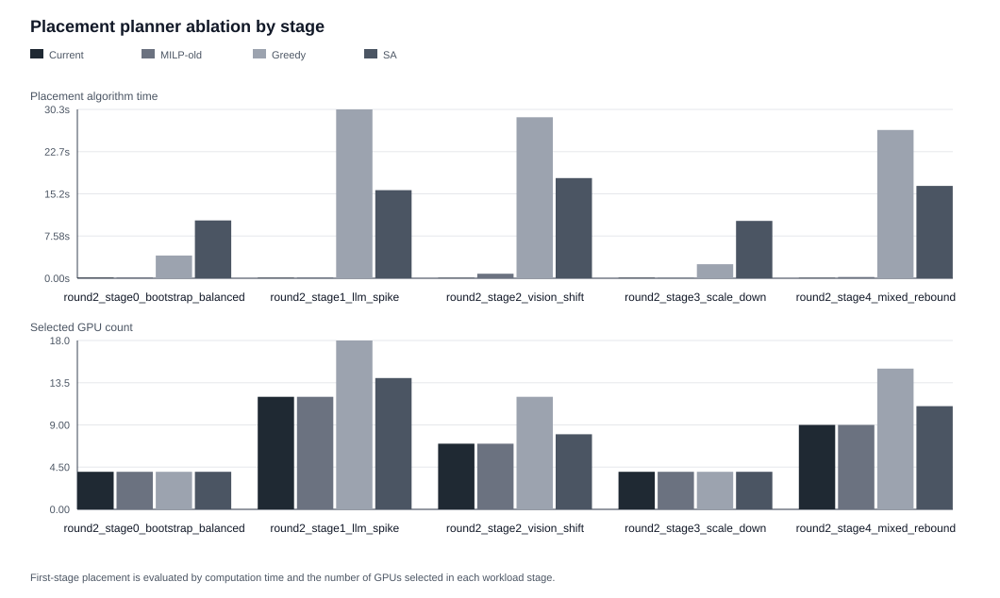
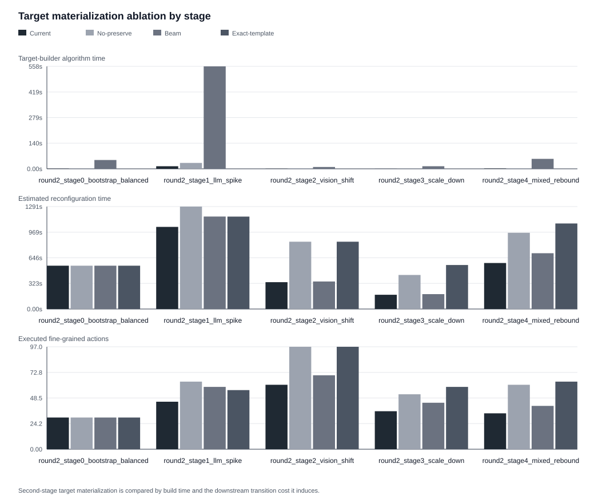
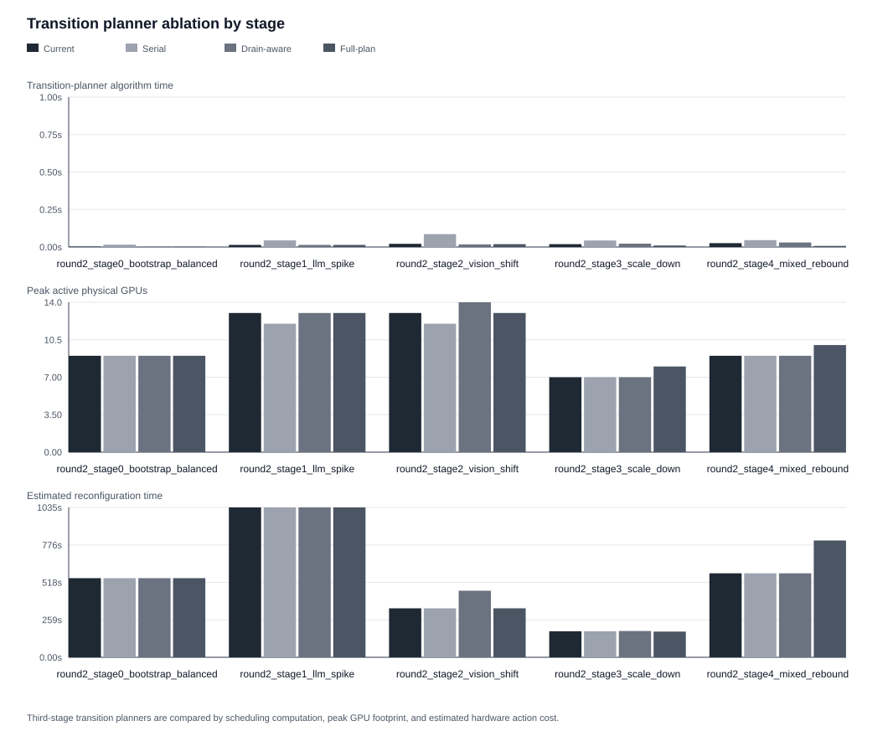
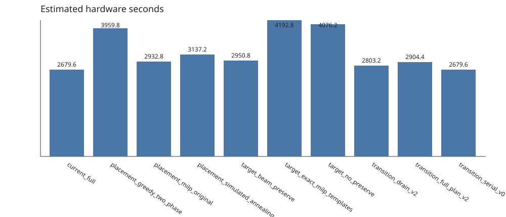
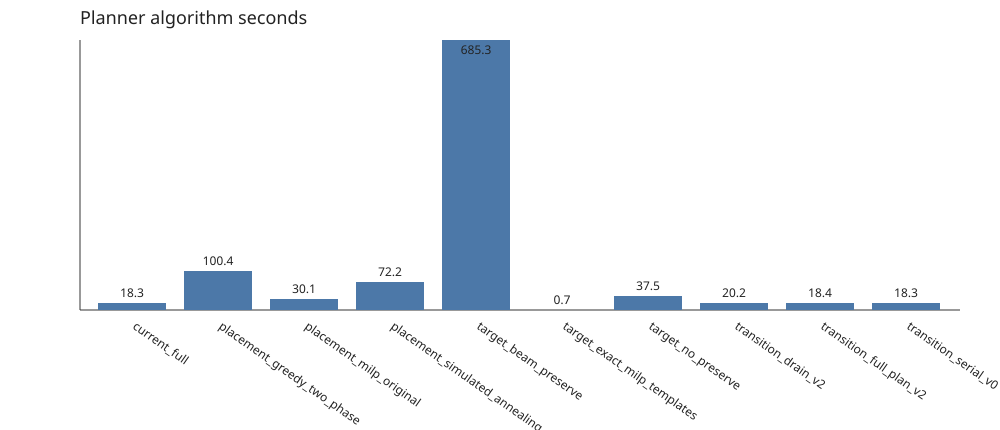
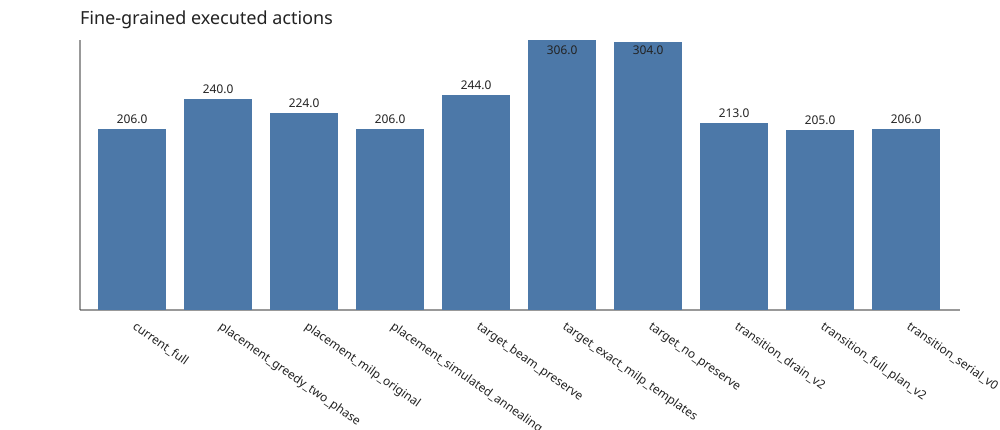
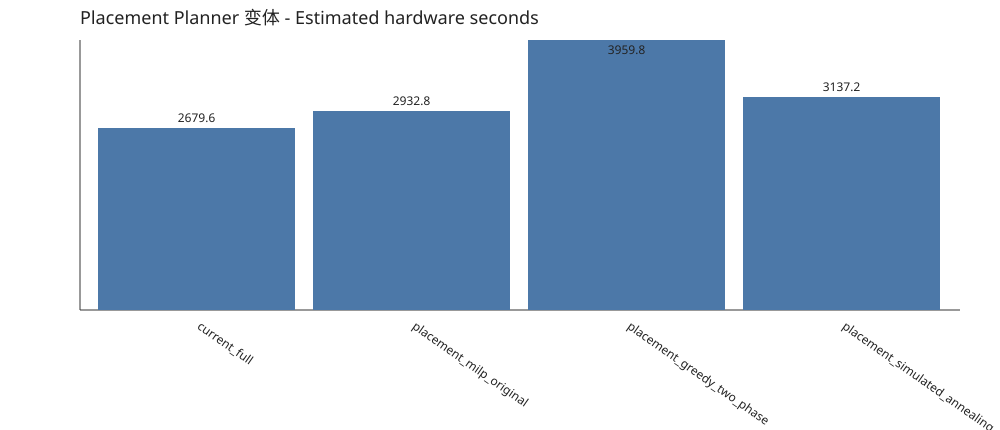
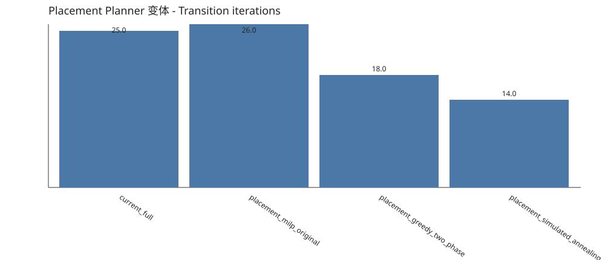
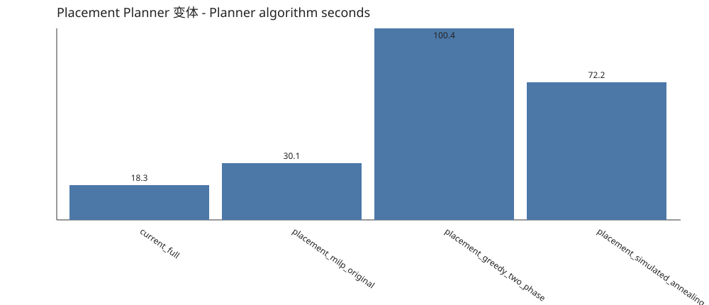
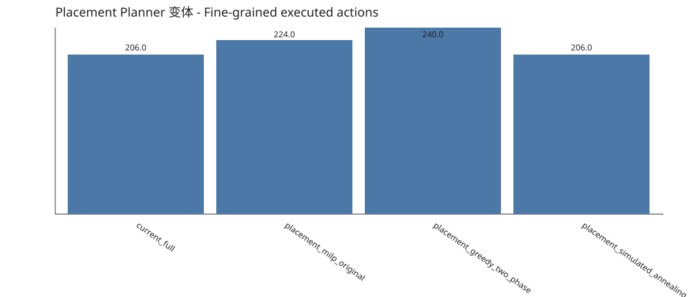
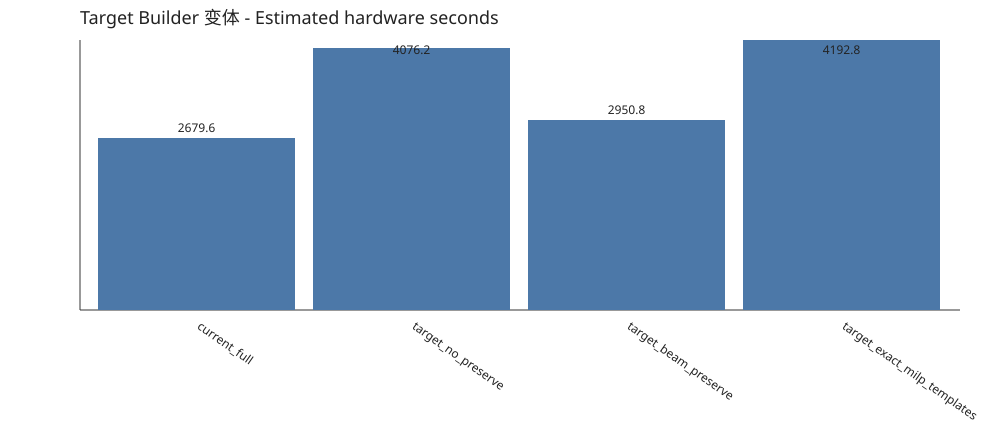
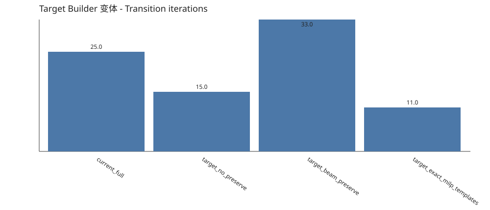
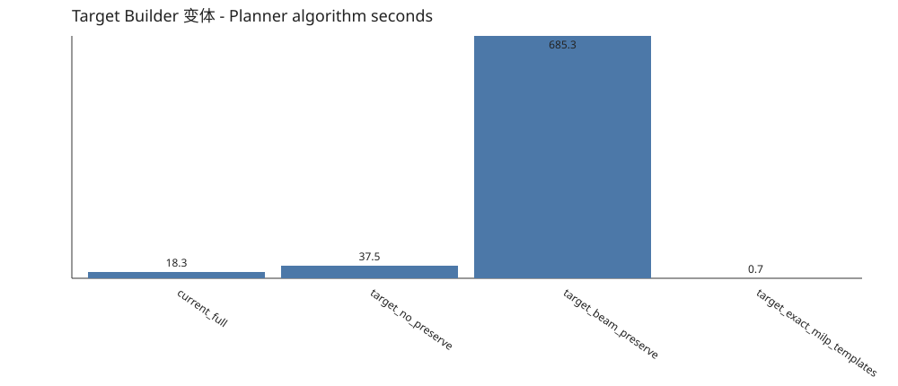
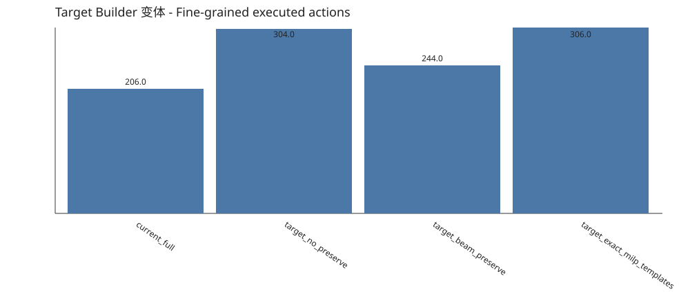
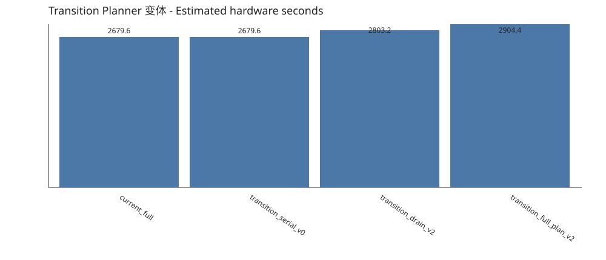
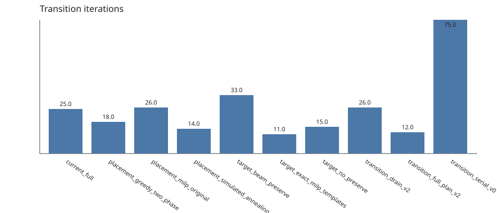
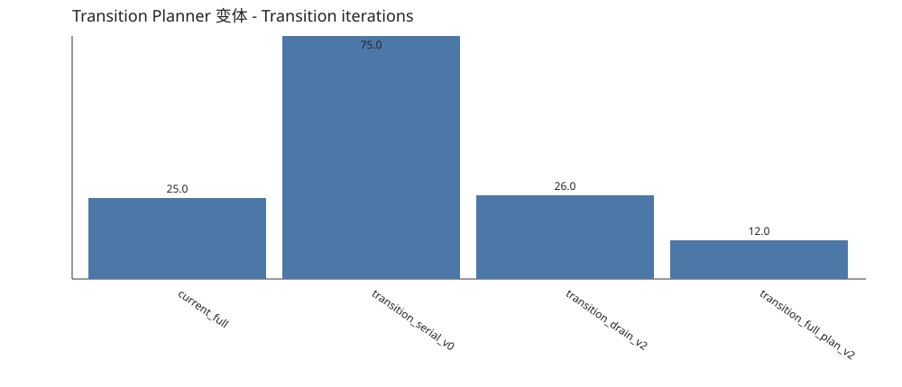
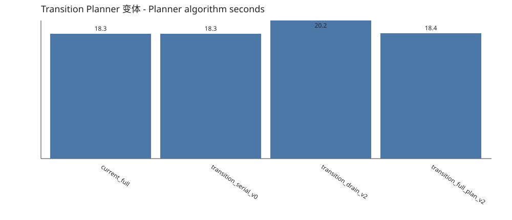
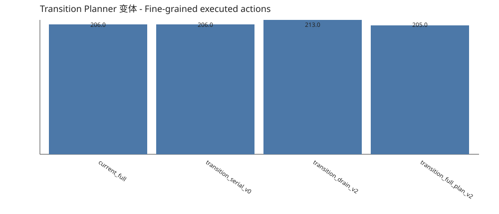